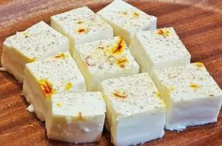

🍨 Kharvas

Ingredients
- 1 liter full-fat milk
- 1/2 cup fresh colostrum milk (or regular milk if not available)
- 1/4 cup sugar (adjust to taste)
- 1/2 tsp cardamom powder
- 1/4 tsp saffron strands (optional)
- 1 tbsp cornflour (optional, to thicken)
- Chopped pistachios or almonds for garnish (optional)
Instructions
- In a heavy-bottomed pan, heat the full-fat milk and bring it to a boil. Then, reduce the heat and let it simmer for 5-7 minutes.
- Add the colostrum milk (if available) to the simmering milk and mix well.
- Stir in sugar, cardamom powder, and saffron strands (if using). Continue to cook for another 5 minutes until the sugar dissolves completely.
- If you'd like a thicker consistency, dissolve cornflour in a little cold milk and add this mixture to the boiling milk. Stir well until it thickens slightly.
- Remove the pan from heat and allow the milk to cool to room temperature.
- Pour the cooled milk mixture into small containers or bowls for steaming.
- Steam the containers in a steamer or pressure cooker (without the pressure) for 25-30 minutes until the kharvas is set and firm to the touch.
- Let the kharvas cool before serving. Garnish with chopped pistachios or almonds.
- Serve chilled and enjoy!
Serve With
- Fresh Fruits
- Sweet Porridge or Vermicelli
💡 Tip: You can adjust the sweetness and flavor by adding rose water or nutmeg to enhance the taste.